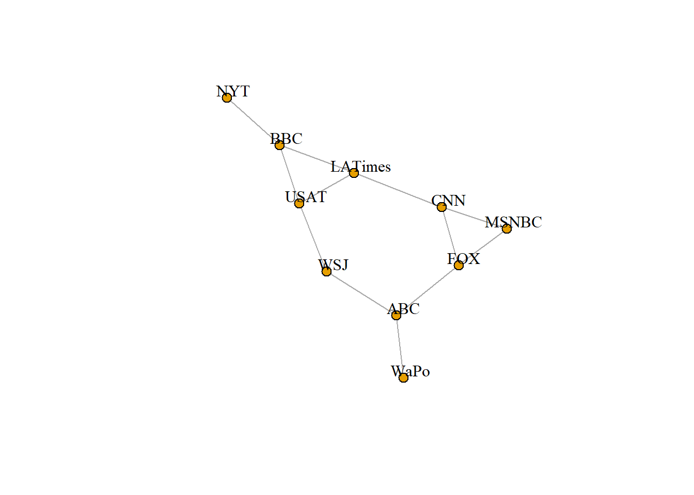
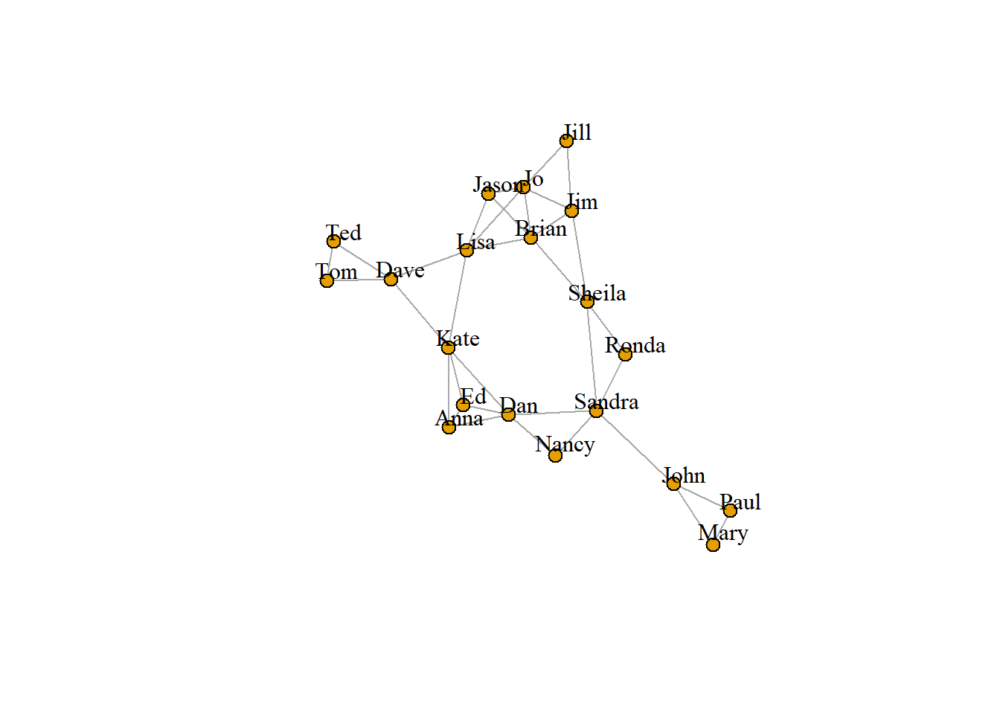

4.2 데이터 세트 2
앞에서 살펴본 바와 같이, 이번에는 네트워크의 에지들이 행렬 형태로 되어 있다. 이러한 데이터를 graph_from_incidence_matrix() 함수를 이용하여, 그래프 개체로 읽어 들일 수 있다. igraph에서 이분할 네트워크는 정점들에 대해 한 모드에서는 FALSE(또는 0) 값을 갖고 또 다른 모드에서는 TRUE(또는 1)값을 갖는 type이라 불리는 속성을 갖는다.
head(nodes2)## id media media.type media.name audience.size
## 1 s01 NYT 1 Newspaper 20
## 2 s02 WaPo 1 Newspaper 25
## 3 s03 WSJ 1 Newspaper 30
## 4 s04 USAT 1 Newspaper 32
## 5 s05 LATimes 1 Newspaper 20
## 6 s06 CNN 2 TV 56head(links2)## U01 U02 U03 U04 U05 U06 U07 U08 U09 U10 U11 U12 U13 U14 U15 U16 U17 U18 U19
## s01 1 1 1 0 0 0 0 0 0 0 0 0 0 0 0 0 0 0 0
## s02 0 0 0 1 1 0 0 0 0 0 0 0 0 0 0 0 0 0 0
## s03 0 0 0 0 0 1 1 1 1 0 0 0 0 0 0 0 0 0 0
## s04 0 0 0 0 0 0 0 0 1 1 1 0 0 0 0 0 0 0 0
## s05 0 0 0 0 0 0 0 0 0 0 1 1 1 0 0 0 0 0 0
## s06 0 0 0 0 0 0 0 0 0 0 0 0 1 1 0 0 1 0 0
## U20
## s01 0
## s02 1
## s03 0
## s04 0
## s05 0
## s06 0net2 <- graph_from_incidence_matrix(links2)
table(V(net2)$type)##
## FALSE TRUE
## 10 201 모드 네트워크를 igraph 개체로 변환하기 위해서는 대신에 graph_from_adjacency_matrix() 함수를 사용한다.
- [참고자료 : 1-mode 네트워크 : https://yjkim81.wordpress.com/network-data_1mode/]
또한 2 모드 네트워크에 대한 이분할 프로젝션을 쉽게 생성할 수 있다. (공동 멤버십은 네트워크 행렬과 그 전치 행렬을 곱함으로써 또는 igraph의 bipartite.projection() 함수를 사용함으로써 쉽게 계산할 수 있다.)
- [참고자료 : 2-mode 네트워크 : https://yjkim81.wordpress.com/network-data-2-mode/]
net2.bp <- bipartite.projection(net2)또한 손으로도 프로젝션을 계산할 수 있다.
as_incidence_matrix(net2) %*% t(as_incidence_matrix(net2)) ## s01 s02 s03 s04 s05 s06 s07 s08 s09 s10
## s01 3 0 0 0 0 0 0 0 0 1
## s02 0 3 0 0 0 0 0 0 1 0
## s03 0 0 4 1 0 0 0 0 1 0
## s04 0 0 1 3 1 0 0 0 0 1
## s05 0 0 0 1 3 1 0 0 0 1
## s06 0 0 0 0 1 3 1 1 0 0
## s07 0 0 0 0 0 1 3 1 0 0
## s08 0 0 0 0 0 1 1 4 1 0
## s09 0 1 1 0 0 0 0 1 3 0
## s10 1 0 0 1 1 0 0 0 0 2t(as_incidence_matrix(net2)) %*% as_incidence_matrix(net2)## U01 U02 U03 U04 U05 U06 U07 U08 U09 U10 U11 U12 U13 U14 U15 U16 U17 U18 U19
## U01 2 1 1 0 0 0 0 0 0 0 1 0 0 0 0 0 0 0 0
## U02 1 1 1 0 0 0 0 0 0 0 0 0 0 0 0 0 0 0 0
## U03 1 1 1 0 0 0 0 0 0 0 0 0 0 0 0 0 0 0 0
## U04 0 0 0 1 1 0 0 0 0 0 0 0 0 0 0 0 0 0 0
## U05 0 0 0 1 1 0 0 0 0 0 0 0 0 0 0 0 0 0 0
## U06 0 0 0 0 0 2 1 1 1 0 0 0 0 0 0 0 0 0 1
## U07 0 0 0 0 0 1 1 1 1 0 0 0 0 0 0 0 0 0 0
## U08 0 0 0 0 0 1 1 1 1 0 0 0 0 0 0 0 0 0 0
## U09 0 0 0 0 0 1 1 1 2 1 1 0 0 0 0 0 0 0 0
## U10 0 0 0 0 0 0 0 0 1 1 1 0 0 0 0 0 0 0 0
## U11 1 0 0 0 0 0 0 0 1 1 3 1 1 0 0 0 0 0 0
## U12 0 0 0 0 0 0 0 0 0 0 1 1 1 0 0 0 0 0 0
## U13 0 0 0 0 0 0 0 0 0 0 1 1 2 1 0 0 1 0 0
## U14 0 0 0 0 0 0 0 0 0 0 0 0 1 2 1 1 1 0 0
## U15 0 0 0 0 0 0 0 0 0 0 0 0 0 1 1 1 0 0 0
## U16 0 0 0 0 0 0 0 0 0 0 0 0 0 1 1 2 1 1 1
## U17 0 0 0 0 0 0 0 0 0 0 0 0 1 1 0 1 2 1 1
## U18 0 0 0 0 0 0 0 0 0 0 0 0 0 0 0 1 1 1 1
## U19 0 0 0 0 0 1 0 0 0 0 0 0 0 0 0 1 1 1 2
## U20 0 0 0 1 1 1 0 0 0 0 0 0 0 0 0 0 0 0 1
## U20
## U01 0
## U02 0
## U03 0
## U04 1
## U05 1
## U06 1
## U07 0
## U08 0
## U09 0
## U10 0
## U11 0
## U12 0
## U13 0
## U14 0
## U15 0
## U16 0
## U17 0
## U18 0
## U19 1
## U20 2plot(net2.bp$proj1, vertex.label.color="black", vertex.label.dist=1,
vertex.size=7, vertex.label=nodes2$media[!is.na(nodes2$media.type)])
plot(net2.bp$proj2, vertex.label.color="black", vertex.label.dist=1,
vertex.size=7, vertex.label=nodes2$media[ is.na(nodes2$media.type)])